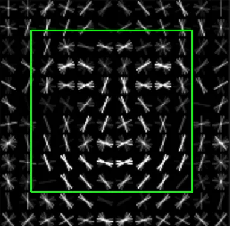
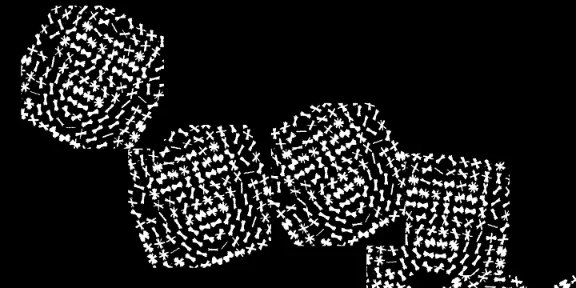
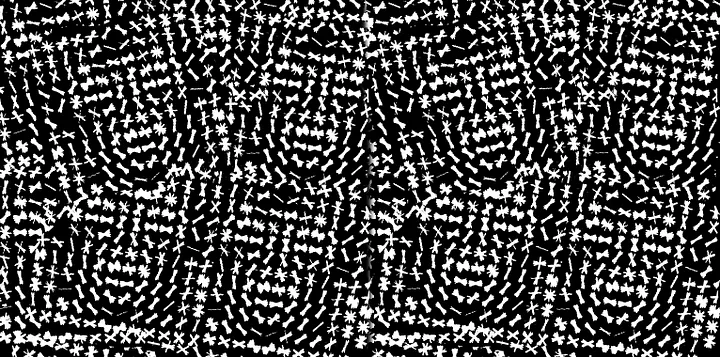

This is a re-post of a blog I wrote for Medium in 2019. Facial detection has evolved a lot since that time, so the information here may be out of date.

Accompanying GitHub repository: https://github.com/BruceMacD/Adversarial-FacesUsage of facial recognition is on the rise. With the recent debates over the ethics of facial recognition potential adversarial attacks against facial detection have been on my mind. Facial recognition is being used everywhere from airports to social media. It seems to be near impossible to opt-out of having your face scanned.
An ideal attack on facial detection would be an article of clothing that looks inconspicuous to the uninformed. With inspiration from the Hyperface project I decided to research and implement a wearable adversarial example. In this article I'll detail the process of creating an adversarial image to fool a selected type of facial detection and how I implemented a practical example on a face mask.
Facial Detection vs. Facial Recognition

The first thing it's important to note before delving deeper into this project is the difference between facial detection and facial recognition. Facial detection refers to the ability to detect when a face is present in an image. Facial recognition relies on facial detection to establish a face is present in an image but it goes one step further and attempts to establish whose face it is.
For this project I have chosen to focus on facial detection. Mainly for the reason that it is much easier to test. To properly test facial recognition access to a facial recognition database would be ideal.
Facial Detection Models
import dlib
import cv2
cv2.imread("path/to/input_img.png")
frontal_face_detector = dlib.get_frontal_face_detector()
upscaling_factor = 1
detected_faces = frontal_face_detector(img, upscaling_factor)Histogram of Oriented Gradients Facial Detection in Python
Note: Expanded code samples with the functionality to display results are available on the accompanying GitHub repository.
In order to test the examples I needed a simple HOG based facial detection implementation. Luckily the dlib library has a HOG facial detector built into its frontal_face_detector.
import dlib
import cv2
cv2.imread("path/to/input_img.png")
frontal_face_detector = dlib.get_frontal_face_detector()
upscaling_factor = 1
detected_faces = frontal_face_detector(img, upscaling_factor)The frontal face detector is run with an input image and an upscaling factor. The upscaling factor of 1 indicates the input image will be upscaled once. Upscaling creates a bigger image which makes it easier to detect faces. The result of the frontal face detection is a list of bounding boxes, one for each detected face.

Passing the visualization of the HOG's expected input you can see that it is detected as a face. Great! We have the base for our adversarial attack.
Creating the Adversarial Design using Random Optimization
Now that I knew the visualization of the HOG's expected input will be detected as a false positive for a frontal face I needed to create a design for printing on a mask that would look inconspicuous. However there were still many factors influencing the design that I was not aware of how to optimize. The position of the faces, their orientation, and their size could all influence the amount of faces detected in an image. I could simply have tried out different designs until I found a good one, but it seemed like more fun and less tediousness to let a learning model do the hard work for me.
I considered several different models to find an optimal input. I researched reinforcement learning, generative adversarial networks, and Q-learning. Ultimately I decided to use simulated annealing with random optimization as it best suited my problem of finding an input that corresponded to the most faces detected by dlib.
I used PIL (the Python Imaging Library) in conjunction with mlrose (a Python library for random optimization) to generate an image and find the best state. Optimization with mlrose requires an initial state and a fitness function. Finding this optimal state was a very expensive computation in my case as the generated state needed to be saved to the disk as an image in order to find the number of faces detected.
# indexes:
# 0 % 4 = pos_x
# 1 % 4 = pos_y
# 2 % 4 = rotation
# 3 % 4 = scale
initial_state = np.array([0, 0, 0, 0, 0, 0, 0, 0, 0, 0, 0, 0, 0, 0, 0, 0, 0, 0, 0, 0, 0, 0, 0, 0])Starting with the initial state mlrose requires a 1D array (as far as I could tell). This meant I had to use a bit of a hacky solution of giving different array positions different significance (see the index explanation). I chose to optimize an input of 6 faces as I could always replicate the design to increase its size.
def detected_max(state):
# converts the 1D state array into images
get_img_from_state(state)
return len(detect_faces(cv2.imread(OUTPUT)))My fitness function was just composed of a conversion of the state to an image followed by detecting the number of faces in that image. The higher the number of faces found the better the fitness. I also tried modifying the fitness function to be higher based on the size of the input HOG face images. This may be better as the larger faces would be more likely to be detected in a real-life situation. However I found that factoring in the face size resulted in longer computation time with visually similar results.
fitness = mlrose.CustomFitness(detected_max)
problem = mlrose.DiscreteOpt(length=24, fitness_fn=fitness,
maximize=True, max_val=scale_factor)
schedule = mlrose.ExpDecay()
best_state, max_faces = mlrose.simulated_annealing(problem, schedule=schedule, max_attempts=10, max_iters=1000,
init_state=initial_state, random_state=1)
print('Optimal state found: ', best_state)
print('Max fitness found: ', max_faces)
# save the optimal found
get_img_from_state(best_state)
print("Number of faces in output: ", len(detect_faces(cv2.imread(OUTPUT))))With the fitness and the initial state set configuring mlrose for simulated annealing was simple. I just assigned our inputs and let it run until an optimal result was found. I ran this a few times to find a visually interesting result.

Finally with this interesting output I added some finishing touches to obscure its facial design. I decided I was more qualified to do this by hand as the intent was to fool humans.

Testing the Design on a Mask

With the final design completed I created some mock mask designs to test how they were evaluated by the HOG facial detection. Initial results seemed promising. The above design consistently returned 4–5 falsely detected faces.